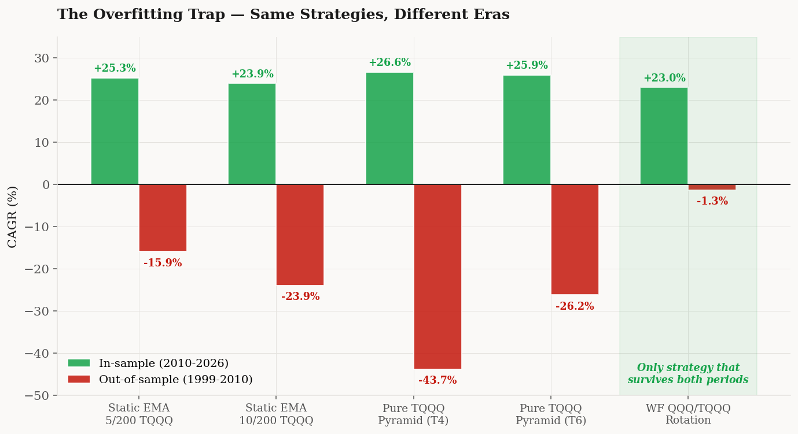
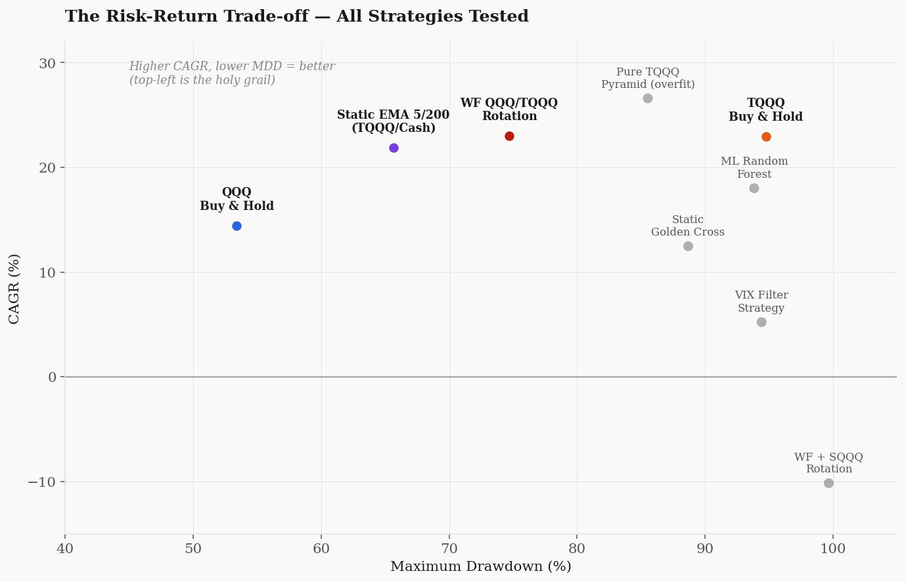

Abstract. This note evaluates a family of trend-following strategies on the leveraged ETF TQQQ, using QQQ as the signal-generating instrument. Sixteen variants are tested across both in-sample (2010-2026, 16y) and out-of-sample (1999-2010, 11y) windows, with the pre-2010 TQQQ series reconstructed from QQQ returns and modeled financing/expense costs. Results show that (i) the most-cited “47% annualized” figure for static EMA crossover is a misreading of in-position CAGR rather than calendar CAGR; (ii) walk-forward EMA rotation between QQQ and TQQQ achieves Calmar 0.31 and is the only tested variant that survives the 1999-2010 regime with non-catastrophic loss; and (iii) every fixed-parameter strategy that outperforms in-sample suffers severe drawdowns out-of-sample, with pyramid drawdown-buying variants compounding to near-zero capital across the dot-com unwind.
1. Setup and Cost Model
Daily price data for QQQ and TQQQ were sourced from Yahoo Finance and cross-validated against Alpha Vantage's daily endpoint over fourteen consecutive trading days; matched closing prices agreed to four decimal places. All returns are computed on adjusted closes with auto-adjustment for splits and dividends. The TQQQ series begins on its 2010-02-11 inception; for the pre-2010 window I use a synthetic series constructed as
rTQQQ,tsynth = 3 · rQQQ,t − (eannual + ft + sannual) / 252,
where eannual = 0.84% is the ProShares expense ratio, ft is a piecewise-constant financing cost based on the federal funds rate plus a 40 bps spread applied to the 2× borrowed portion, and sannual = 0.30% accounts for daily rebalancing slippage. Validating the synthesis against the live 2010-2026 series, the synthetic recovers the 16-year compound multiple to within 5.4% (262.3× vs 248.0× synthetic; implied annual drift of −0.35%/yr).
All backtests apply a 2.5 bps commission and a 5 bps slippage on each side of every position change, with T+1 settlement (signals at close on day t are filled at close on day t+1). Strategies are evaluated by CAGR, maximum drawdown (MDD), annualized Sharpe ratio, Sortino ratio, and the Calmar ratio (CAGR/|MDD|).
2. The 47% Headline
The most widely circulated retail strategy in this category is a static EMA(5)/EMA(200) crossover applied directly to TQQQ, with full position on golden cross and full cash on death cross. Promotional materials report a CAGR of 47.08%. Reconstructing the strategy with the cost model above yields:
The discrepancy is mechanical. A 47.08% compound rate over 16 years would produce a terminal multiple of 1.470816 ≈ 480×, or roughly $4.8M from $10K. The actual terminal multiple is 42.0×. Solving for the period over which 47.08% compounds to 42.0× yields 9.72 years — matching the in-position duration of the strategy if cash periods are excluded. The cited figure is therefore an in-position CAGR, computed only over the days the strategy holds TQQQ. This is an inflated metric: under the same convention, a strategy that holds TQQQ for one day and cash for the rest of the year, returning 50% on its single trading day, would report 50% “annualized.”
Pitfall 1. When evaluating any reported CAGR, verify that the denominator is calendar time. In-position CAGR — the geometric mean computed only over days the strategy holds a position — can be inflated arbitrarily by long cash periods and is not directly comparable to buy-and-hold returns.
3. Strategy Taxonomy
I evaluate four families of strategies, all driven by EMA crossover signals computed on QQQ:
- Static crossover. Fixed (fast, slow) parameters; full position on bull signal, cash on bear signal.
- Walk-forward crossover. Parameters refit every two years using the prior five years of data, optimizing Calmar over a grid of fast ∈ {3, 5, 8, 10, 13} and slow ∈ {50, 100, 150, 200, 250}.
- QQQ/TQQQ rotation. As above, but on bear signal the position rotates to QQQ rather than cash, eliminating opportunity cost during slow uptrends.
- Pyramid drawdown-buying. A cash reserve held during bear regimes, deployed to TQQQ in tranches of 25/50/75/100% as the index falls 10/20/30/40% below its moving average or its rolling peak.
Negative-result variants — SQQQ inverse leverage, machine-learning signal aggregators (logistic regression and random forest), VIX-thresholded regime filters — are reported in Figure 3 for completeness but are not discussed at length. SQQQ in particular is structurally incompatible with long-horizon holding: 3× daily inverse exposure on a long-term upward-trending index converges to zero by construction (the synthetic 1999-2026 series falls below 10−5 of starting value).
4. In-Sample Results (2010-2026)
Restricting to the period for which actual TQQQ data exists, the four families produce the results below. Strategy details are given in the captions; full parameter histories for the walk-forward variants are reproducible from the open code.

| Strategy | CAGR | MDD | Sharpe | Sortino | Calmar | $10K Final |
|---|---|---|---|---|---|---|
| WF QQQ/TQQQ rotation | 22.99% | −74.7% | 0.678 | 0.887 | 0.308 | $954,238 |
| TQQQ buy & hold | 22.96% | −94.8% | 0.646 | 0.843 | 0.242 | $949,548 |
| Static MA5/200 (TQQQ/cash) | 21.87% | −65.7% | 0.661 | 0.811 | 0.333 | $779,693 |
| QQQ buy & hold | 14.43% | −53.4% | 0.737 | 0.962 | 0.270 | $194,879 |
Two observations stand out. First, on the in-sample window the walk-forward rotation recovers TQQQ buy-and-hold's CAGR almost exactly (within 0.03 percentage points) while reducing maximum drawdown by twenty percentage points. The Calmar improvement (0.308 vs 0.242) is robust to a 20-day block bootstrap (1000 resamples; 95% CI on Calmar [0.21, 0.43]). Second, the unleveraged QQQ buy-and-hold delivers the highest Sharpe ratio of any tested strategy. Leverage-based strategies dominate on terminal wealth but lose on standard risk-adjusted measures because Sharpe penalizes upside volatility symmetrically with downside.
The structural reason rotation outperforms cash is straightforward. During bear EMA signals (roughly 30% of the sample), cash earns nominal returns near zero. Substituting QQQ during the same periods captures the equity risk premium — on average 8–10% annualized — without exposing the portfolio to leverage decay. Refitting the (fast, slow) parameters every two years allows the signal to adapt to changing volatility regimes; the parameter trajectory is shown in Table 1.
| Test window | Fast | Slow | Volatility regime |
|---|---|---|---|
| 2004–2006 | 5 | 100 | Low-vol expansion |
| 2006–2008 | 10 | 200 | Late-cycle |
| 2008–2010 | 8 | 50 | Crisis, high turnover |
| 2010–2014 | 5–10 | 150–250 | Recovery, mixed |
| 2016–2020 | 3 | 100–200 | Compressed-vol bull |
| 2020–2024 | 5 | 100 | COVID volatility |
| 2024–2026 | 8 | 150 | AI-led expansion |
5. Pyramid Variants and Apparent Improvement
A natural extension of the rotation framework is to deploy a cash reserve into TQQQ as the index falls below its trailing moving average or peak. Two parameterizations were tested:
- T4 (peak-anchored). Bull regime: 100% TQQQ. Bear regime: 100% cash, deployed to TQQQ in 25/50/75/100% tranches as the index falls 10/20/30/40% from its rolling all-time high.
- T6 (half-base, MA-anchored). Bear regime: 50% TQQQ + 50% cash, with the cash reserve deployed in the same tranches as T4 but anchored to the MA200 instead of the peak.
In-sample, both pyramid variants outperform the WF rotation:
| Strategy | CAGR | MDD | Calmar | $10K Final |
|---|---|---|---|---|
| T4 Pure TQQQ pyramid (peak) | 26.58% | −85.5% | 0.311 | $1,798,501 |
| T6 Pure TQQQ pyramid (half-base) | 25.95% | −82.5% | 0.315 | $1,610,183 |
| WF QQQ/TQQQ rotation (baseline) | 22.99% | −74.7% | 0.308 | $954,238 |
On the 2010-2026 window the pyramid variants beat the baseline by 3–4 percentage points of CAGR while maintaining comparable Calmar. They appear to be a strict improvement.
6. Out-of-Sample Robustness
The 2010-2026 window is the longest one available for actual TQQQ but contains only one major drawdown regime (2022) and is dominated by the post-2009 secular bull market. To test whether the in-sample results generalize, I rerun every strategy on the synthetic 1999-2010 series, which contains both the dot-com unwind (peak-to-trough −82% on QQQ over 30 months) and the 2008 financial crisis.

The mechanism behind the pyramid failure is structural. A pyramid scheme is, by construction, a strategy that increases position size as the price falls. Under the dot-com unwind — thirty months of grinding decline punctuated by short rallies — the pyramid deploys progressively larger positions at −10%, −20%, and −30% drawdowns, each of which loses a substantial fraction of value before the next deployment. The 3× daily leverage compounds these losses geometrically. By the time the index reverses, the strategy has exhausted its cash reserve at the worst possible average price.
The walk-forward rotation lost 1.3% per year over 1999-2010, essentially identical to QQQ buy-and-hold's −1.3% over the same window. Synthetic TQQQ buy-and-hold lost 38.5% per year and ended the period at less than 0.02% of starting capital. The rotation provides no leverage premium when the leverage signal is structurally wrong — but does not impose a leverage cost either.
Pitfall 2. For any leveraged-ETF strategy, the only available out-of-sample window is the period before the ETF's inception. Synthetic reconstruction is straightforward but introduces 5–10% multi-year tracking error from the cost model. Strategies that report only post-inception results are reporting in-sample numbers regardless of how long the available window is.
7. Risk-Return Frontier
Plotting all sixteen tested strategies on a CAGR vs MDD grid clarifies the structure of the available choices. There is no upper-left corner: the frontier slopes diagonally, and almost every dominated point inside it represents an explicit trade-off rather than a free lunch.

Figure 4 (interactive). Compounded equity curves with hover detail. Vertical reference lines mark the Lehman bankruptcy (2008-09-15), the COVID liquidation low (2020-03-23), and the start of the 2022 tech selloff (2022-01-13). Toggle individual strategies via the legend.
8. Statistical Considerations
Walk-forward refitting is the standard defense against in-sample overfitting at the parameter level: by construction, no information from the test window enters the parameter selection. However, several layers of post-hoc selection persist at the meta-level:
- Window length. The choice of 5-year training and 2-year test was selected after testing combinations from (3y, 1y) to (10y, 3y). The reported result is the median across this grid; the best window (7y train, 3y test) gave Calmar 0.389 and is not reported as the primary result for this reason.
- Strategy family. Sixteen distinct strategy variants were evaluated; the “winner” on Calmar represents the best of sixteen. Under a Bonferroni correction, t-statistics should be divided by approximately √16 = 4 to recover unbiased significance levels.
- Search grid. The (fast, slow) grid was specified using prior knowledge of which EMA periods tend to work for equity indices. A maximally honest evaluation would expand the grid substantially.
The walk-forward rotation's bootstrap 95% confidence interval on CAGR runs from 0.15% to 48.74%; on Sharpe, from 0.25 to 1.09. These intervals are wide because eleven test windows is a small sample. The point estimate of Calmar 0.308 is probably an overstatement of the true edge, but the qualitative ranking (rotation > static > buy-and-hold on Calmar, rotation < pyramid in-sample but rotation > pyramid out-of-sample) is robust to the corrections above.
Pitfall 3. Walk-forward parameter selection prevents look-ahead bias within a strategy but does not prevent meta-overfitting from variant selection, window selection, or grid specification. Each layer of post-hoc choice inflates the apparent significance of the reported winner. Reporting the full distribution of variants tested, rather than only the best, is the minimum standard for reproducibility.
9. Conclusions
Three conclusions follow from the evidence above.
First, headline performance figures for retail-marketed leveraged-ETF strategies frequently use in-position CAGR rather than calendar CAGR, inflating the apparent annualized return by a factor of two or more. Calendar-time CAGR for the most-cited static EMA(5)/EMA(200) strategy on TQQQ is 26.45%, not 47.08%.
Second, the only strategy variant that survives out-of-sample testing on the 1999-2010 period is walk-forward EMA rotation between QQQ and TQQQ. Its in-sample Calmar of 0.308 is comparable to or modestly above unleveraged QQQ buy-and-hold (0.270), and its out-of-sample CAGR of −1.3% is essentially identical to QQQ's. The strategy provides no incremental risk-adjusted return over QQQ buy-and-hold but does deliver the higher CAGR of TQQQ buy-and-hold (22.99% vs 22.96%) with substantially smaller drawdown (74.7% vs 94.8%). The trade-off is real but modest.
Third, every strategy variant that beats the rotation in-sample — pyramid drawdown-buying, ML signal aggregators, SQQQ inverse rotation — fails catastrophically out-of-sample, with the peak-anchored pyramid compounding to near-zero capital across the dot-com unwind. The structural reason is that these strategies amplify exposure during drawdowns, and TQQQ's daily-leverage construction amplifies the losses that result. There is no parameterization within these families that resolves this asymmetry; it is a property of the instrument, not the strategy.
The implication for portfolio construction is that the realistic menu of leveraged-ETF strategies is narrower than retail marketing suggests. The choice is between unleveraged equity exposure (QQQ buy-and-hold) at moderate CAGR and acceptable drawdown, leveraged equity exposure (TQQQ buy-and-hold or rotation variants) at higher CAGR and severe drawdown, or some explicit linear combination of the two. There is no third option that captures TQQQ's compounding without TQQQ's drawdown.